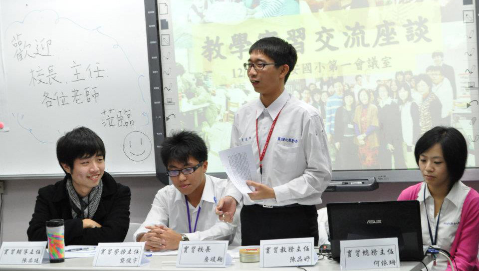

These files are my notes while I was preparing certificate exam for elementry school teacher. The contents of these notes are based on the "陳嘉陽(民101)，教育概論(上)、教育概論(中)以及教育概論(下)，教甄策略研究中心 印行" and some information from the internet.
Resources
Teacher Certification Examination (教師檢定 筆記)
Note
| Entry | Data Description |
| 01 | 教育概論 Note Cover |
| 02 | 第一章 教育的基本概念 (完整版) |
| 03 | 第二章 教育的歷史演進 (完整版) |
| 04 | 第三章 教育的哲學基礎 (完整版) |
| 05 | 第四章 教育的社會學基礎 (完整版) |
| 06 | 第五章 教育的心理學基礎 (完整版) |
| 07 | 第六章 教育的心理學基礎(二) (完整版) |
| 08 | 第七章 教育行政 |
| 09 | 第九章 課程理論與實務 (完整版) |
| 10 | 第十一章 教學原理 |
| 11 | 第十五章 輔導與諮商(完整版) |
| 12 | 第十五章 輔導與諮商(完整版) |